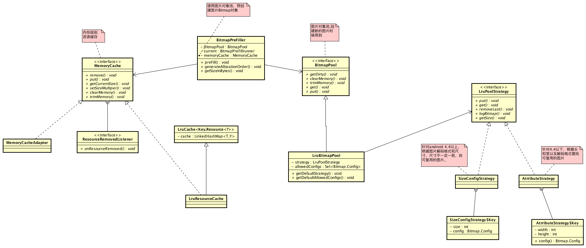
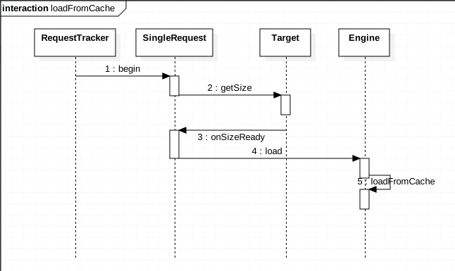
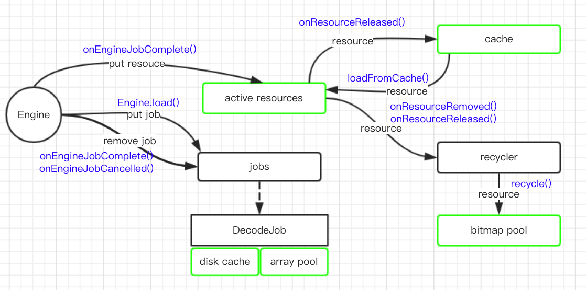
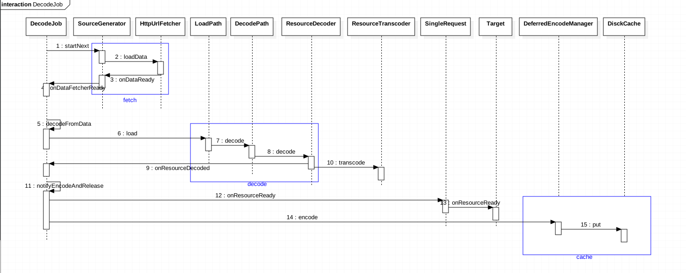
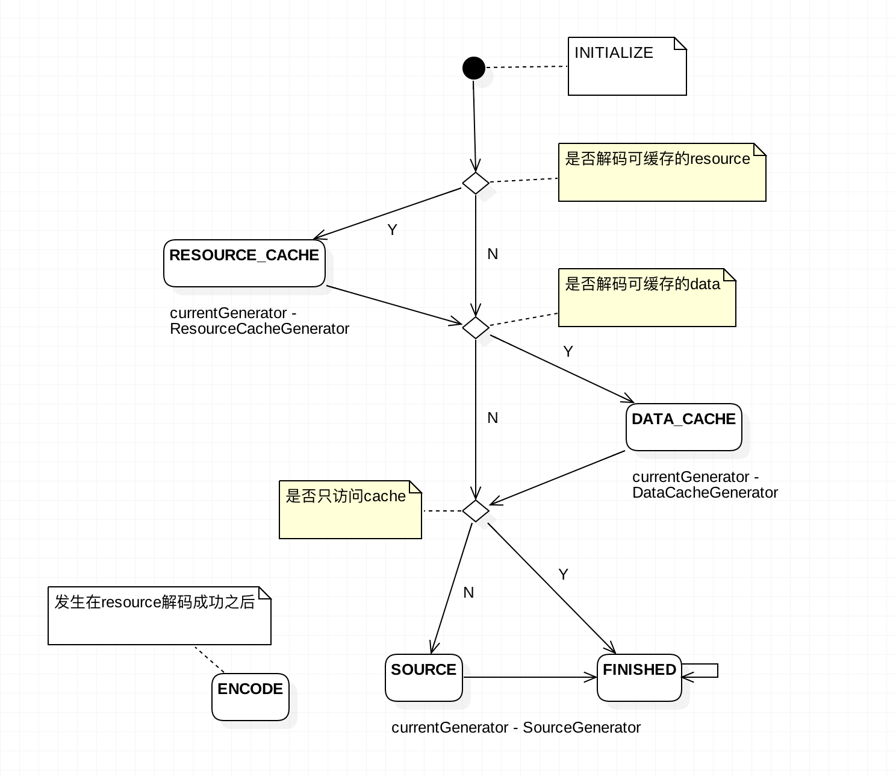

<!DOCTYPE html>
<html lang="zh-Hans">
<head>
  <meta charset="UTF-8">
<meta name="viewport" content="width=device-width, initial-scale=1, maximum-scale=2">
<meta name="theme-color" content="#222">
<meta name="generator" content="Hexo 3.9.0">
  <link rel="apple-touch-icon" sizes="180x180" href="/images/apple-touch-icon-next.png">
  <link rel="icon" type="image/png" sizes="32x32" href="/images/favicon-32x32-next.png">
  <link rel="icon" type="image/png" sizes="16x16" href="/images/favicon-16x16-next.png">
  <link rel="mask-icon" href="/images/logo.svg" color="#222">

<link rel="stylesheet" href="/css/main.css">


<link rel="stylesheet" href="/lib/font-awesome/css/all.min.css">

<script id="hexo-configurations">
    var NexT = window.NexT || {};
    var CONFIG = {"hostname":"www.sunmoonblog.com","root":"/","scheme":"Mist","version":"7.8.0","exturl":false,"sidebar":{"position":"right","display":"post","padding":18,"offset":12,"onmobile":false},"copycode":{"enable":false,"show_result":false,"style":null},"back2top":{"enable":true,"sidebar":false,"scrollpercent":false},"bookmark":{"enable":false,"color":"#222","save":"auto"},"fancybox":false,"mediumzoom":false,"lazyload":false,"pangu":false,"comments":{"style":"tabs","active":null,"storage":true,"lazyload":false,"nav":null},"algolia":{"hits":{"per_page":10},"labels":{"input_placeholder":"Search for Posts","hits_empty":"We didn't find any results for the search: ${query}","hits_stats":"${hits} results found in ${time} ms"}},"localsearch":{"enable":false,"trigger":"auto","top_n_per_article":1,"unescape":false,"preload":false},"motion":{"enable":true,"async":false,"transition":{"post_block":"fadeIn","post_header":"slideDownIn","post_body":"slideDownIn","coll_header":"slideLeftIn","sidebar":"slideUpIn"}},"path":"search.xml"};
  </script>

  <meta name="description" content="Glide的缓存有多大，其缓存策略是怎样的？">
<meta name="keywords" content="Android">
<meta property="og:type" content="article">
<meta property="og:title" content="Glide缓存分析">
<meta property="og:url" content="http://www.sunmoonblog.com/2018/07/27/glide-cache/index.html">
<meta property="og:site_name" content="Sunmoon的博客">
<meta property="og:description" content="Glide的缓存有多大，其缓存策略是怎样的？">
<meta property="og:locale" content="zh-Hans">
<meta property="og:image" content="http://www.sunmoonblog.com/2018/07/27/glide-cache/glide-cache.png">
<meta property="og:image" content="http://www.sunmoonblog.com/2018/07/27/glide-cache/load-from-cache.png">
<meta property="og:image" content="http://www.sunmoonblog.com/2018/07/27/glide-cache/glide-cache-arch.png">
<meta property="og:image" content="http://www.sunmoonblog.com/2018/07/27/glide-cache/decode-job.png">
<meta property="og:image" content="http://www.sunmoonblog.com/2018/07/27/glide-cache/stage.png">
<meta property="og:updated_time" content="2020-11-13T02:18:58.893Z">
<meta name="twitter:card" content="summary">
<meta name="twitter:title" content="Glide缓存分析">
<meta name="twitter:description" content="Glide的缓存有多大，其缓存策略是怎样的？">
<meta name="twitter:image" content="http://www.sunmoonblog.com/2018/07/27/glide-cache/glide-cache.png">

<link rel="canonical" href="http://www.sunmoonblog.com/2018/07/27/glide-cache/">


<script id="page-configurations">
  // https://hexo.io/docs/variables.html
  CONFIG.page = {
    sidebar: "",
    isHome : false,
    isPost : true,
    lang   : 'zh-Hans'
  };
</script>

  <title>Glide缓存分析 | Sunmoon的博客</title>
  


  <noscript>
  <style>
  .use-motion .brand,
  .use-motion .menu-item,
  .sidebar-inner,
  .use-motion .post-block,
  .use-motion .pagination,
  .use-motion .comments,
  .use-motion .post-header,
  .use-motion .post-body,
  .use-motion .collection-header { opacity: initial; }

  .use-motion .site-title,
  .use-motion .site-subtitle {
    opacity: initial;
    top: initial;
  }

  .use-motion .logo-line-before i { left: initial; }
  .use-motion .logo-line-after i { right: initial; }
  </style>
</noscript>

</head>

<body itemscope itemtype="http://schema.org/WebPage">
  <div class="container use-motion">
    <div class="headband"></div>

    <header class="header" itemscope itemtype="http://schema.org/WPHeader">
      <div class="header-inner"><div class="site-brand-container">
  <div class="site-nav-toggle">
    <div class="toggle" aria-label="Toggle navigation bar">
      <span class="toggle-line toggle-line-first"></span>
      <span class="toggle-line toggle-line-middle"></span>
      <span class="toggle-line toggle-line-last"></span>
    </div>
  </div>

  <div class="site-meta">

    <a href="/" class="brand" rel="start">
      <span class="logo-line-before"><i></i></span>
      <h1 class="site-title">Sunmoon的博客</h1>
      <span class="logo-line-after"><i></i></span>
    </a>
      <p class="site-subtitle" itemprop="description">点点滴滴</p>
  </div>

  <div class="site-nav-right">
    <div class="toggle popup-trigger">
    </div>
  </div>
</div>


<nav class="site-nav">
  <ul id="menu" class="main-menu menu">
        <li class="menu-item menu-item-home">

    <a href="/" rel="section"><i class="fa fa-home fa-fw"></i>Home</a>

  </li>
        <li class="menu-item menu-item-archives">

    <a href="/archives/" rel="section"><i class="fa fa-archive fa-fw"></i>Archives</a>

  </li>
  </ul>
</nav>


</div>
    </header>

    
  <div class="back-to-top">
    <i class="fa fa-arrow-up"></i>
    <span>0%</span>
  </div>


    <main class="main">
      <div class="main-inner">
        <div class="content-wrap">
          

          <div class="content post posts-expand">
            

    
  
  
  <article itemscope itemtype="http://schema.org/Article" class="post-block" lang="zh-Hans">
    <link itemprop="mainEntityOfPage" href="http://www.sunmoonblog.com/2018/07/27/glide-cache/">

    <span hidden itemprop="author" itemscope itemtype="http://schema.org/Person">
      <meta itemprop="image" content="/images/avatar.gif">
      <meta itemprop="name" content="Sunmoon">
      <meta itemprop="description" content="移动开发 Android 生活">
    </span>

    <span hidden itemprop="publisher" itemscope itemtype="http://schema.org/Organization">
      <meta itemprop="name" content="Sunmoon的博客">
    </span>
      <header class="post-header">
        <h1 class="post-title" itemprop="name headline">
          Glide缓存分析
        </h1>

        <div class="post-meta">
            <span class="post-meta-item">
              <span class="post-meta-item-icon">
                <i class="far fa-calendar"></i>
              </span>
              <span class="post-meta-item-text">Posted on</span>

              <time title="Created: 2018-07-27 18:02:56" itemprop="dateCreated datePublished" datetime="2018-07-27T18:02:56+08:00">2018-07-27</time>
            </span>
              <span class="post-meta-item">
                <span class="post-meta-item-icon">
                  <i class="far fa-calendar-check"></i>
                </span>
                <span class="post-meta-item-text">Edited on</span>
                <time title="Modified: 2020-11-13 10:18:58" itemprop="dateModified" datetime="2020-11-13T10:18:58+08:00">2020-11-13</time>
              </span>

          

        </div>
      </header>

    
    
    
    <div class="post-body" itemprop="articleBody">

      
        <p>Glide的缓存有多大，其缓存策略是怎样的？<br><a id="more"></a></p>
<h1 id="缓存和对象池的大小"><a href="#缓存和对象池的大小" class="headerlink" title="缓存和对象池的大小"></a>缓存和对象池的大小</h1><p>缓存是一个复杂的话题。Glide缓存有几个主要考虑因素：</p>
<ul>
<li>一是机器的内存有多大。缓存过大的话，导致内存压力大。缓存过小的话，无法充分利用内存提升性能。所以应当根据内存大小来分配适当大小的缓存。另外，高端机上可以分多分配一些，低端机上则应少分配一些。</li>
<li>二是屏幕大小。Glide分配多少缓存会基于图片数量来考虑。假设一张图片占满足一屏，那应当分配几屏的缓存？</li>
</ul>
<p>如何判断是否低端机(内存较小的机型)？API level 19以上根据<code>ActivityManager.isLowMemoryDevice()</code>判断。</p>
<blockquote>
<p>如果是低内存机器返回true。一台设备是否低内存最终由设备配置决定，目前而言通常指512MB内存、屏幕分辨率为800*480或更少。</p>
</blockquote>
<p>另一个方法是<code>ActivityManager.getMemoryClass()</code>。它也很有用。</p>
<blockquote>
<p>返回当前设备上每个应用大概的内存值。这个值让你了解为了让系统运行良好自己的应用内存占用限值是大概多少。返回值的单位是MB。最少的是16MB(跟这些设备上Java Heap大小相同)。内存较大的设备返回24或更大。</p>
</blockquote>
<p><code>MemorySizeCalculator</code>用于计算缓存大小。</p>
<figure class="highlight java"><table><tr><td class="gutter"><pre><span class="line">1</span><br><span class="line">2</span><br><span class="line">3</span><br><span class="line">4</span><br><span class="line">5</span><br><span class="line">6</span><br><span class="line">7</span><br><span class="line">8</span><br><span class="line">9</span><br><span class="line">10</span><br><span class="line">11</span><br><span class="line">12</span><br><span class="line">13</span><br><span class="line">14</span><br><span class="line">15</span><br><span class="line">16</span><br><span class="line">17</span><br><span class="line">18</span><br><span class="line">19</span><br><span class="line">20</span><br><span class="line">21</span><br><span class="line">22</span><br><span class="line">23</span><br><span class="line">24</span><br><span class="line">25</span><br><span class="line">26</span><br><span class="line">27</span><br><span class="line">28</span><br><span class="line">29</span><br><span class="line">30</span><br><span class="line">31</span><br><span class="line">32</span><br><span class="line">33</span><br><span class="line">34</span><br><span class="line">35</span><br><span class="line">36</span><br><span class="line">37</span><br><span class="line">38</span><br><span class="line">39</span><br><span class="line">40</span><br><span class="line">41</span><br><span class="line">42</span><br><span class="line">43</span><br><span class="line">44</span><br><span class="line">45</span><br><span class="line">46</span><br><span class="line">47</span><br><span class="line">48</span><br><span class="line">49</span><br></pre></td><td class="code"><pre><span class="line"> <span class="keyword">public</span> <span class="keyword">static</span> <span class="keyword">final</span> <span class="class"><span class="keyword">class</span> <span class="title">Builder</span> </span>&#123;</span><br><span class="line">   <span class="keyword">static</span> <span class="keyword">final</span> <span class="keyword">int</span> MEMORY_CACHE_TARGET_SCREENS = <span class="number">2</span>;</span><br><span class="line">   <span class="keyword">static</span> <span class="keyword">final</span> <span class="keyword">int</span> BITMAP_POOL_TARGET_SCREENS = <span class="number">4</span>;</span><br><span class="line">   <span class="keyword">static</span> <span class="keyword">final</span> <span class="keyword">float</span> MAX_SIZE_MULTIPLIER = <span class="number">0.4f</span>;</span><br><span class="line">   <span class="keyword">static</span> <span class="keyword">final</span> <span class="keyword">float</span> LOW_MEMORY_MAX_SIZE_MULTIPLIER = <span class="number">0.33f</span>;</span><br><span class="line">   <span class="comment">// 4MB.</span></span><br><span class="line">   <span class="keyword">static</span> <span class="keyword">final</span> <span class="keyword">int</span> ARRAY_POOL_SIZE_BYTES = <span class="number">4</span> * <span class="number">1024</span> * <span class="number">1024</span>;</span><br><span class="line"></span><br><span class="line"><span class="comment">// 缺省时memoryCacheScreens为2, 即缓存两屏图片</span></span><br><span class="line">   <span class="keyword">private</span> <span class="keyword">float</span> memoryCacheScreens = MEMORY_CACHE_TARGET_SCREENS;</span><br><span class="line"><span class="comment">// 缺省时bitmapPoolScreens为4，即对象池大小为4屏图片</span></span><br><span class="line">   <span class="keyword">private</span> <span class="keyword">float</span> bitmapPoolScreens = BITMAP_POOL_TARGET_SCREENS;</span><br><span class="line">   <span class="keyword">private</span> <span class="keyword">float</span> maxSizeMultiplier = MAX_SIZE_MULTIPLIER;</span><br><span class="line">   <span class="keyword">private</span> <span class="keyword">float</span> lowMemoryMaxSizeMultiplier = LOW_MEMORY_MAX_SIZE_MULTIPLIER;</span><br><span class="line">   <span class="keyword">private</span> <span class="keyword">int</span> arrayPoolSizeBytes = ARRAY_POOL_SIZE_BYTES;</span><br><span class="line"> &#125;</span><br><span class="line"></span><br><span class="line"> MemorySizeCalculator(Context context, ActivityManager activityManager,</span><br><span class="line">     ScreenDimensions screenDimensions, <span class="keyword">float</span> memoryCacheScreens, <span class="keyword">float</span> bitmapPoolScreens,</span><br><span class="line">     <span class="keyword">int</span> targetArrayPoolSize, <span class="keyword">float</span> maxSizeMultiplier, <span class="keyword">float</span> lowMemoryMaxSizeMultiplier) &#123;	</span><br><span class="line">   <span class="keyword">this</span>.context = context;</span><br><span class="line"><span class="comment">// 缺省时arrayPoolSizeBytes为4MB, 但低内存机器上为2MB</span></span><br><span class="line">   arrayPoolSize =</span><br><span class="line">       isLowMemoryDevice(activityManager)</span><br><span class="line">           ? targetArrayPoolSize / LOW_MEMORY_BYTE_ARRAY_POOL_DIVISOR</span><br><span class="line">           : targetArrayPoolSize;</span><br><span class="line">   <span class="comment">// 当前应用的内存限值(内存最大值, 注意这只是一个建议)</span></span><br><span class="line">   <span class="keyword">final</span> <span class="keyword">int</span> maxSize = getMaxSize(activityManager, maxSizeMultiplier, lowMemoryMaxSizeMultiplier);</span><br><span class="line">   <span class="comment">// 一屏数据占用的内存大小</span></span><br><span class="line">   <span class="keyword">final</span> <span class="keyword">int</span> screenSize = screenDimensions.getWidthPixels() * screenDimensions.getHeightPixels()</span><br><span class="line">       * BYTES_PER_ARGB_8888_PIXEL;</span><br><span class="line">   <span class="comment">// Bitmap对象池大小</span></span><br><span class="line">   <span class="keyword">int</span> targetPoolSize = Math.round(screenSize * bitmapPoolScreens);</span><br><span class="line">   <span class="comment">// Bitmap缓存大小</span></span><br><span class="line">   <span class="keyword">int</span> targetMemoryCacheSize = Math.round(screenSize * memoryCacheScreens);</span><br><span class="line">   <span class="comment">// 剩余可用内存</span></span><br><span class="line">   <span class="keyword">int</span> availableSize = maxSize - arrayPoolSize;</span><br><span class="line"></span><br><span class="line">   <span class="comment">// (Bitmap对象池大小 + Bitmap缓存大小)超过剩余可用内存时进行适当调整</span></span><br><span class="line">   <span class="keyword">if</span> (targetMemoryCacheSize + targetPoolSize &lt;= availableSize) &#123;</span><br><span class="line">     memoryCacheSize = targetMemoryCacheSize;</span><br><span class="line">     bitmapPoolSize = targetPoolSize;</span><br><span class="line">   &#125; <span class="keyword">else</span> &#123;</span><br><span class="line">     <span class="keyword">float</span> part = availableSize / (bitmapPoolScreens + memoryCacheScreens);</span><br><span class="line">     memoryCacheSize = Math.round(part * memoryCacheScreens);</span><br><span class="line">     bitmapPoolSize = Math.round(part * bitmapPoolScreens);</span><br><span class="line">   &#125;</span><br><span class="line"></span><br><span class="line"> &#125;</span><br></pre></td></tr></table></figure>
<p>MemorySizeCalculator会输出最终的缓存参数。如果看不到MemorySizeCalculator日志，adb shell中执行<code>setprop log.tag.MemorySizeCalculator VERBOSE</code>。我的机器输出如下(为便于查看稍微调整了下格式)：</p>
<figure class="highlight plain"><table><tr><td class="gutter"><pre><span class="line">1</span><br><span class="line">2</span><br><span class="line">3</span><br><span class="line">4</span><br><span class="line">5</span><br><span class="line">6</span><br><span class="line">7</span><br><span class="line">8</span><br></pre></td><td class="code"><pre><span class="line">07-26 03:06:09.062 5193-5193/com.example.demo_glide D/MemorySizeCalculator: Calculation complete, Calculated </span><br><span class="line">memory cache size: 11.47 MB, </span><br><span class="line">pool size: 22.93 MB, </span><br><span class="line">byte array size: 4.00 MB, </span><br><span class="line">memory class limited? true, </span><br><span class="line">max size: 38.40 MB, </span><br><span class="line">memoryClass: 96, </span><br><span class="line">isLowMemoryDevice: false</span><br></pre></td></tr></table></figure>
<p>手动校验一遍。</p>
<p>targetMemoryCacheSize: 15500160 = 1080 (width) <em> 1794 (height) </em> 4 (每像素占用内存) <em> 2 (缓存屏数)<br>targetPoolSize: 31000320 = 1080 (width) </em> 1794 (height) <em> 4 (每像素占用内存) </em> 2 (对象池屏数)<br>maxSize: 40265320 = 96 (memory class) <em> 1024 </em> 1024 <em> 0.4 (maxSizeMultiplier)<br>arrayPoolSize: 4194304 = 4 </em> 1024 * 1024 (缺省的arrayPoolSize)<br>availableSize: 36071016 = 40265320(maxSize) - 4194304 (arrayPoolSize)</p>
<p>由于targetMemoryCacheSize与targetPoolSize之和超过availableSize，所以实际的缓存大小和BitmapPool大小需要重新调整一下。调整原则很简单，按比例分就行。</p>
<p>part: 6011836 = 36071016(availableSize) / (2 + 4)<br>memoryCacheSize: 12023672 = 6011836 <em> 2<br>bitmapPoolSize: 24047344 = 6011836 </em> 4</p>
<p>换算成MB。</p>
<p>memoryCacheSize 12023672B = 11.47MB<br>bitmapPoolSize 24047344B = 22.93MB<br>arrayPoolSize 4MB<br>maxSize 40265320 = 38.40MB</p>
<p>跟日志输出一致。</p>
<p>TODO Glide的缓存大小是否合理？</p>
<h1 id="缓存"><a href="#缓存" class="headerlink" title="缓存"></a>缓存</h1><p>memoryCacheSize，bitmapPoolSize，arrayPoolSize三个参数值确定后，就该真正的主角出场了。</p>
<p>GlideBuilder允许自定义缓存策略。如果没有自定义缓存策略，使用内置的缓存策略。</p>
<figure class="highlight java"><table><tr><td class="gutter"><pre><span class="line">1</span><br><span class="line">2</span><br><span class="line">3</span><br><span class="line">4</span><br><span class="line">5</span><br><span class="line">6</span><br><span class="line">7</span><br><span class="line">8</span><br><span class="line">9</span><br><span class="line">10</span><br><span class="line">11</span><br><span class="line">12</span><br><span class="line">13</span><br><span class="line">14</span><br><span class="line">15</span><br><span class="line">16</span><br><span class="line">17</span><br><span class="line">18</span><br><span class="line">19</span><br><span class="line">20</span><br><span class="line">21</span><br><span class="line">22</span><br><span class="line">23</span><br><span class="line">24</span><br><span class="line">25</span><br><span class="line">26</span><br><span class="line">27</span><br><span class="line">28</span><br><span class="line">29</span><br><span class="line">30</span><br><span class="line">31</span><br><span class="line">32</span><br><span class="line">33</span><br><span class="line">34</span><br><span class="line">35</span><br><span class="line">36</span><br><span class="line">37</span><br></pre></td><td class="code"><pre><span class="line"><span class="keyword">public</span> <span class="keyword">final</span> <span class="class"><span class="keyword">class</span> <span class="title">GlideBuilder</span> </span>&#123;</span><br><span class="line"></span><br><span class="line">    <span class="function"><span class="keyword">public</span> Glide <span class="title">build</span><span class="params">(Context context)</span> </span>&#123;</span><br><span class="line">        ...</span><br><span class="line">    </span><br><span class="line">        <span class="keyword">if</span> (memorySizeCalculator == <span class="keyword">null</span>) &#123;</span><br><span class="line">          memorySizeCalculator = <span class="keyword">new</span> MemorySizeCalculator.Builder(context).build();</span><br><span class="line">        &#125;</span><br><span class="line">    </span><br><span class="line">        <span class="keyword">if</span> (bitmapPool == <span class="keyword">null</span>) &#123;</span><br><span class="line">          <span class="keyword">int</span> size = memorySizeCalculator.getBitmapPoolSize();</span><br><span class="line">          bitmapPool = <span class="keyword">new</span> LruBitmapPool(size);</span><br><span class="line">        &#125;</span><br><span class="line">    </span><br><span class="line">        <span class="keyword">if</span> (arrayPool == <span class="keyword">null</span>) &#123;</span><br><span class="line">          arrayPool = <span class="keyword">new</span> LruArrayPool(memorySizeCalculator.getArrayPoolSizeInBytes());</span><br><span class="line">        &#125;</span><br><span class="line">    </span><br><span class="line">        <span class="keyword">if</span> (memoryCache == <span class="keyword">null</span>) &#123;</span><br><span class="line">          memoryCache = <span class="keyword">new</span> LruResourceCache(memorySizeCalculator.getMemoryCacheSize());</span><br><span class="line">        &#125;</span><br><span class="line">    </span><br><span class="line">        <span class="keyword">if</span> (diskCacheFactory == <span class="keyword">null</span>) &#123;</span><br><span class="line">          diskCacheFactory = <span class="keyword">new</span> InternalCacheDiskCacheFactory(context);</span><br><span class="line">        &#125;</span><br><span class="line">    </span><br><span class="line">        ...</span><br><span class="line">        engine = <span class="keyword">new</span> Engine(memoryCache, diskCacheFactory, diskCacheExecutor, sourceExecutor,</span><br><span class="line">              GlideExecutor.newUnlimitedSourceExecutor());</span><br><span class="line">    </span><br><span class="line">    </span><br><span class="line">        RequestManagerRetriever requestManagerRetriever = <span class="keyword">new</span> RequestManagerRetriever(</span><br><span class="line">            requestManagerFactory);</span><br><span class="line">    </span><br><span class="line">        <span class="keyword">return</span> <span class="keyword">new</span> Glide(...);</span><br><span class="line">    &#125;</span><br><span class="line">&#125;</span><br></pre></td></tr></table></figure>
<p>内置的缓存策略包括。</p>
<table>
<thead>
<tr>
<th>类</th>
<th>功能</th>
<th>大小</th>
<th>备注</th>
</tr>
</thead>
<tbody>
<tr>
<td>LruResourceCache</td>
<td>resource内存缓存(为什么不是bitmap缓存?)</td>
<td>memoryCacheSize</td>
<td><a href="https://developer.android.com/topic/performance/graphics/cache-bitmap" target="_blank" rel="noopener">cache-bitmap</a></td>
</tr>
<tr>
<td>LruBitmapPool</td>
<td>bitmap池</td>
<td>bitmapPoolSize</td>
<td><a href="https://www.youtube.com/watch?v=_ioFW3cyRV0" target="_blank" rel="noopener">bitmap复用</a>，<a href="https://developer.android.com/topic/performance/graphics/manage-memory" target="_blank" rel="noopener">manage-memory</a></td>
</tr>
<tr>
<td>LruArrayPool</td>
<td>byte数组池</td>
<td>arrayPoolSize</td>
<td>防止图片操作导致内存抖动和频繁GC</td>
</tr>
<tr>
<td>DiskCache.Factory</td>
<td>disk缓存</td>
<td>-</td>
<td><a href="https://developer.android.com/topic/performance/graphics/cache-bitmap" target="_blank" rel="noopener">cache-bitmap</a></td>
</tr>
</tbody>
</table>
<p></p>
<h2 id="Memory缓存"><a href="#Memory缓存" class="headerlink" title="Memory缓存"></a>Memory缓存</h2><p>从缓存中加载图片的流程如下。</p>
<p></p>
<figure class="highlight java"><table><tr><td class="gutter"><pre><span class="line">1</span><br><span class="line">2</span><br><span class="line">3</span><br><span class="line">4</span><br><span class="line">5</span><br><span class="line">6</span><br><span class="line">7</span><br><span class="line">8</span><br><span class="line">9</span><br><span class="line">10</span><br><span class="line">11</span><br><span class="line">12</span><br><span class="line">13</span><br><span class="line">14</span><br><span class="line">15</span><br><span class="line">16</span><br><span class="line">17</span><br><span class="line">18</span><br><span class="line">19</span><br><span class="line">20</span><br><span class="line">21</span><br><span class="line">22</span><br><span class="line">23</span><br><span class="line">24</span><br><span class="line">25</span><br><span class="line">26</span><br><span class="line">27</span><br><span class="line">28</span><br><span class="line">29</span><br><span class="line">30</span><br></pre></td><td class="code"><pre><span class="line"><span class="comment">// Engine.java</span></span><br><span class="line"></span><br><span class="line">  <span class="keyword">private</span> EngineResource&lt;?&gt; loadFromCache(Key key, <span class="keyword">boolean</span> isMemoryCacheable) &#123;</span><br><span class="line">    <span class="keyword">if</span> (!isMemoryCacheable) &#123;</span><br><span class="line">      <span class="keyword">return</span> <span class="keyword">null</span>;</span><br><span class="line">    &#125;</span><br><span class="line"></span><br><span class="line">    EngineResource&lt;?&gt; cached = getEngineResourceFromCache(key);</span><br><span class="line">    <span class="keyword">if</span> (cached != <span class="keyword">null</span>) &#123;</span><br><span class="line">      cached.acquire();</span><br><span class="line">      activeResources.put(key, <span class="keyword">new</span> ResourceWeakReference(key, cached, getReferenceQueue()));</span><br><span class="line">    &#125;</span><br><span class="line">    <span class="keyword">return</span> cached;</span><br><span class="line">  &#125;</span><br><span class="line"></span><br><span class="line">  <span class="meta">@SuppressWarnings</span>(<span class="string">"unchecked"</span>)</span><br><span class="line">  <span class="keyword">private</span> EngineResource&lt;?&gt; getEngineResourceFromCache(Key key) &#123;</span><br><span class="line">    Resource&lt;?&gt; cached = cache.remove(key);</span><br><span class="line"></span><br><span class="line">    <span class="keyword">final</span> EngineResource&lt;?&gt; result;</span><br><span class="line">    <span class="keyword">if</span> (cached == <span class="keyword">null</span>) &#123;</span><br><span class="line">      result = <span class="keyword">null</span>;</span><br><span class="line">    &#125; <span class="keyword">else</span> <span class="keyword">if</span> (cached <span class="keyword">instanceof</span> EngineResource) &#123;</span><br><span class="line">      <span class="comment">// Save an object allocation if we've cached an EngineResource (the typical case).</span></span><br><span class="line">      result = (EngineResource&lt;?&gt;) cached;</span><br><span class="line">    &#125; <span class="keyword">else</span> &#123;</span><br><span class="line">      result = <span class="keyword">new</span> EngineResource&lt;&gt;(cached, <span class="keyword">true</span> <span class="comment">/*isMemoryCacheable*/</span>);</span><br><span class="line">    &#125;</span><br><span class="line">    <span class="keyword">return</span> result;</span><br><span class="line">  &#125;</span><br></pre></td></tr></table></figure>
<p>还有以下几个相关方法。</p>
<figure class="highlight java"><table><tr><td class="gutter"><pre><span class="line">1</span><br><span class="line">2</span><br><span class="line">3</span><br><span class="line">4</span><br><span class="line">5</span><br><span class="line">6</span><br><span class="line">7</span><br><span class="line">8</span><br><span class="line">9</span><br><span class="line">10</span><br><span class="line">11</span><br><span class="line">12</span><br><span class="line">13</span><br><span class="line">14</span><br><span class="line">15</span><br><span class="line">16</span><br><span class="line">17</span><br><span class="line">18</span><br><span class="line">19</span><br><span class="line">20</span><br><span class="line">21</span><br><span class="line">22</span><br><span class="line">23</span><br><span class="line">24</span><br><span class="line">25</span><br><span class="line">26</span><br><span class="line">27</span><br><span class="line">28</span><br><span class="line">29</span><br><span class="line">30</span><br><span class="line">31</span><br><span class="line">32</span><br></pre></td><td class="code"><pre><span class="line"><span class="meta">@SuppressWarnings</span>(<span class="string">"unchecked"</span>)</span><br><span class="line"><span class="meta">@Override</span></span><br><span class="line"><span class="function"><span class="keyword">public</span> <span class="keyword">void</span> <span class="title">onEngineJobComplete</span><span class="params">(Key key, EngineResource&lt;?&gt; resource)</span> </span>&#123;</span><br><span class="line">  Util.assertMainThread();</span><br><span class="line">  <span class="comment">// A null resource indicates that the load failed, usually due to an exception.</span></span><br><span class="line">  <span class="keyword">if</span> (resource != <span class="keyword">null</span>) &#123;</span><br><span class="line">    resource.setResourceListener(key, <span class="keyword">this</span>);</span><br><span class="line"></span><br><span class="line">    <span class="keyword">if</span> (resource.isCacheable()) &#123;</span><br><span class="line">      activeResources.put(key, <span class="keyword">new</span> ResourceWeakReference(key, resource, getReferenceQueue()));</span><br><span class="line">    &#125;</span><br><span class="line">  &#125;</span><br><span class="line">  <span class="comment">// <span class="doctag">TODO:</span> should this check that the engine job is still current?</span></span><br><span class="line">  jobs.remove(key);</span><br><span class="line">&#125;</span><br><span class="line"></span><br><span class="line"><span class="meta">@Override</span></span><br><span class="line"><span class="function"><span class="keyword">public</span> <span class="keyword">void</span> <span class="title">onResourceReleased</span><span class="params">(Key cacheKey, EngineResource resource)</span> </span>&#123;</span><br><span class="line">  Util.assertMainThread();</span><br><span class="line">  activeResources.remove(cacheKey);</span><br><span class="line">  <span class="keyword">if</span> (resource.isCacheable()) &#123;</span><br><span class="line">    cache.put(cacheKey, resource);</span><br><span class="line">  &#125; <span class="keyword">else</span> &#123;</span><br><span class="line">    resourceRecycler.recycle(resource);</span><br><span class="line">  &#125;</span><br><span class="line">&#125;</span><br><span class="line"></span><br><span class="line"><span class="meta">@Override</span></span><br><span class="line"><span class="function"><span class="keyword">public</span> <span class="keyword">void</span> <span class="title">onResourceRemoved</span><span class="params">(<span class="keyword">final</span> Resource&lt;?&gt; resource)</span> </span>&#123;</span><br><span class="line">  Util.assertMainThread();</span><br><span class="line">  resourceRecycler.recycle(resource);</span><br><span class="line">&#125;</span><br></pre></td></tr></table></figure>
<p>向缓存添加图片的流程如下</p>
<p></p>
<p>有一个很重要的点：跟之前预想的不同，完成解码的图片resource并不是一开始就被添加到cache，而是先添加到active resource。当resource被释放时，如果可缓存则添加到cache，如果不可缓存则经由recycler回收至bitmapPool</p>
<h2 id="Disk缓存"><a href="#Disk缓存" class="headerlink" title="Disk缓存"></a>Disk缓存</h2><p>disk缓存相对memory缓存不那么直观。对disk缓存的访问分散在几个不同的阶段。</p>
<p>一个是在DecodeJob快结束阶段</p>
<p></p>
<figure class="highlight java"><table><tr><td class="gutter"><pre><span class="line">1</span><br><span class="line">2</span><br><span class="line">3</span><br><span class="line">4</span><br><span class="line">5</span><br><span class="line">6</span><br><span class="line">7</span><br><span class="line">8</span><br><span class="line">9</span><br><span class="line">10</span><br><span class="line">11</span><br><span class="line">12</span><br></pre></td><td class="code"><pre><span class="line"><span class="keyword">private</span> <span class="keyword">static</span> <span class="class"><span class="keyword">class</span> <span class="title">DeferredEncodeManager</span>&lt;<span class="title">Z</span>&gt; </span>&#123;</span><br><span class="line">  <span class="function"><span class="keyword">void</span> <span class="title">encode</span><span class="params">(DiskCacheProvider diskCacheProvider, Options options)</span> </span>&#123;</span><br><span class="line">    TraceCompat.beginSection(<span class="string">"DecodeJob.encode"</span>);</span><br><span class="line">    <span class="keyword">try</span> &#123;</span><br><span class="line">      diskCacheProvider.getDiskCache().put(key,</span><br><span class="line">          <span class="keyword">new</span> DataCacheWriter&lt;&gt;(encoder, toEncode, options));</span><br><span class="line">    &#125; <span class="keyword">finally</span> &#123;</span><br><span class="line">      toEncode.unlock();</span><br><span class="line">      TraceCompat.endSection();</span><br><span class="line">    &#125;</span><br><span class="line">  &#125;</span><br><span class="line">&#125;</span><br></pre></td></tr></table></figure>
<p>另一个是在DataFetcherGenerator.startNext()阶段</p>
<p>DataFetcherGenerator有三个子类</p>
<ul>
<li>SourceGenerator</li>
<li>DataCacheGenerator</li>
<li>ResourceCacheGenerator</li>
</ul>
<p>这三个子类在<code>DecodeJob.runGenerators()</code>中均有被用到。<code>runGenerators()</code>按下面的状态图运行(DecodeJob.Stage)。</p>
<figure class="highlight java"><table><tr><td class="gutter"><pre><span class="line">1</span><br><span class="line">2</span><br><span class="line">3</span><br><span class="line">4</span><br><span class="line">5</span><br><span class="line">6</span><br><span class="line">7</span><br><span class="line">8</span><br><span class="line">9</span><br><span class="line">10</span><br><span class="line">11</span><br><span class="line">12</span><br><span class="line">13</span><br><span class="line">14</span><br><span class="line">15</span><br><span class="line">16</span><br><span class="line">17</span><br></pre></td><td class="code"><pre><span class="line"><span class="comment">/**</span></span><br><span class="line"><span class="comment"> * Where we're trying to decode data from.</span></span><br><span class="line"><span class="comment"> */</span></span><br><span class="line"><span class="keyword">private</span> <span class="keyword">enum</span> Stage &#123;</span><br><span class="line">  <span class="comment">/** The initial stage. */</span></span><br><span class="line">  INITIALIZE,</span><br><span class="line">  <span class="comment">/** Decode from a cached resource. */</span></span><br><span class="line">  RESOURCE_CACHE,</span><br><span class="line">  <span class="comment">/** Decode from cached source data. */</span></span><br><span class="line">  DATA_CACHE,</span><br><span class="line">  <span class="comment">/** Decode from retrieved source. */</span></span><br><span class="line">  SOURCE,</span><br><span class="line">  <span class="comment">/** Encoding transformed resources after a successful load. */</span></span><br><span class="line">  ENCODE,</span><br><span class="line">  <span class="comment">/** No more viable stages. */</span></span><br><span class="line">  FINISHED,</span><br><span class="line">&#125;</span><br></pre></td></tr></table></figure>
<p></p>
<p>ResourceCacheGenerator和DataCacheGenerator均有<code>DiskCache.get()</code>操作，而SourceGenerator有<code>DiskCache.put()</code>操作。</p>
<figure class="highlight java"><table><tr><td class="gutter"><pre><span class="line">1</span><br><span class="line">2</span><br><span class="line">3</span><br><span class="line">4</span><br><span class="line">5</span><br><span class="line">6</span><br><span class="line">7</span><br><span class="line">8</span><br><span class="line">9</span><br><span class="line">10</span><br><span class="line">11</span><br><span class="line">12</span><br><span class="line">13</span><br><span class="line">14</span><br><span class="line">15</span><br><span class="line">16</span><br><span class="line">17</span><br><span class="line">18</span><br><span class="line">19</span><br><span class="line">20</span><br><span class="line">21</span><br><span class="line">22</span><br><span class="line">23</span><br><span class="line">24</span><br><span class="line">25</span><br><span class="line">26</span><br><span class="line">27</span><br><span class="line">28</span><br><span class="line">29</span><br><span class="line">30</span><br><span class="line">31</span><br><span class="line">32</span><br><span class="line">33</span><br><span class="line">34</span><br><span class="line">35</span><br><span class="line">36</span><br><span class="line">37</span><br><span class="line">38</span><br><span class="line">39</span><br><span class="line">40</span><br><span class="line">41</span><br><span class="line">42</span><br><span class="line">43</span><br><span class="line">44</span><br><span class="line">45</span><br><span class="line">46</span><br><span class="line">47</span><br><span class="line">48</span><br><span class="line">49</span><br><span class="line">50</span><br><span class="line">51</span><br><span class="line">52</span><br><span class="line">53</span><br><span class="line">54</span><br><span class="line">55</span><br><span class="line">56</span><br><span class="line">57</span><br><span class="line">58</span><br><span class="line">59</span><br><span class="line">60</span><br><span class="line">61</span><br><span class="line">62</span><br><span class="line">63</span><br></pre></td><td class="code"><pre><span class="line"><span class="class"><span class="keyword">class</span> <span class="title">ResourceCacheGenerator</span> <span class="keyword">implements</span> <span class="title">DataFetcherGenerator</span>,</span></span><br><span class="line"><span class="class"></span></span><br><span class="line"><span class="class">  @<span class="title">Override</span></span></span><br><span class="line"><span class="class">  <span class="title">public</span> <span class="title">boolean</span> <span class="title">startNext</span>() </span>&#123;</span><br><span class="line">      ...</span><br><span class="line">      currentKey = <span class="keyword">new</span> ResourceCacheKey(sourceId, helper.getSignature(), helper.getWidth(),</span><br><span class="line">          helper.getHeight(), transformation, resourceClass, helper.getOptions());</span><br><span class="line">      cacheFile = helper.getDiskCache().get(currentKey);</span><br><span class="line">      <span class="keyword">if</span> (cacheFile != <span class="keyword">null</span>) &#123;</span><br><span class="line">        <span class="keyword">this</span>.sourceKey = sourceId;</span><br><span class="line">        modelLoaders = helper.getModelLoaders(cacheFile);</span><br><span class="line">        modelLoaderIndex = <span class="number">0</span>;</span><br><span class="line">      &#125;</span><br><span class="line">    &#125;</span><br><span class="line">  &#125;</span><br><span class="line">&#125;</span><br><span class="line"></span><br><span class="line"><span class="class"><span class="keyword">class</span> <span class="title">DataCacheGenerator</span> <span class="keyword">implements</span> <span class="title">DataFetcherGenerator</span>,</span></span><br><span class="line"><span class="class"></span></span><br><span class="line"><span class="class">  @<span class="title">Override</span></span></span><br><span class="line"><span class="class">  <span class="title">public</span> <span class="title">boolean</span> <span class="title">startNext</span>() </span>&#123;</span><br><span class="line">    <span class="keyword">while</span> (modelLoaders == <span class="keyword">null</span> || !hasNextModelLoader()) &#123;</span><br><span class="line">      ...</span><br><span class="line">      Key sourceId = cacheKeys.get(sourceIdIndex);</span><br><span class="line">      Key originalKey = <span class="keyword">new</span> DataCacheKey(sourceId, helper.getSignature());</span><br><span class="line">      cacheFile = helper.getDiskCache().get(originalKey);</span><br><span class="line">      <span class="keyword">if</span> (cacheFile != <span class="keyword">null</span>) &#123;</span><br><span class="line">        <span class="keyword">this</span>.sourceKey = sourceId;</span><br><span class="line">        modelLoaders = helper.getModelLoaders(cacheFile);</span><br><span class="line">        modelLoaderIndex = <span class="number">0</span>;</span><br><span class="line">      &#125;</span><br><span class="line">    &#125;</span><br><span class="line">&#125;</span><br><span class="line"></span><br><span class="line"><span class="class"><span class="keyword">class</span> <span class="title">SourceGenerator</span> <span class="keyword">implements</span> <span class="title">DataFetcherGenerator</span> </span>&#123;</span><br><span class="line"></span><br><span class="line">  <span class="meta">@Override</span></span><br><span class="line">  <span class="function"><span class="keyword">public</span> <span class="keyword">boolean</span> <span class="title">startNext</span><span class="params">()</span> </span>&#123;</span><br><span class="line">    <span class="keyword">if</span> (dataToCache != <span class="keyword">null</span>) &#123;</span><br><span class="line">      Object data = dataToCache;</span><br><span class="line">      dataToCache = <span class="keyword">null</span>;</span><br><span class="line">      cacheData(data);</span><br><span class="line">    &#125;</span><br><span class="line">    ...</span><br><span class="line">  &#125;</span><br><span class="line"></span><br><span class="line">  <span class="function"><span class="keyword">private</span> <span class="keyword">void</span> <span class="title">cacheData</span><span class="params">(Object dataToCache)</span> </span>&#123;</span><br><span class="line">    <span class="keyword">long</span> startTime = LogTime.getLogTime();</span><br><span class="line">    <span class="keyword">try</span> &#123;</span><br><span class="line">      Encoder&lt;Object&gt; encoder = helper.getSourceEncoder(dataToCache);</span><br><span class="line">      DataCacheWriter&lt;Object&gt; writer =</span><br><span class="line">          <span class="keyword">new</span> DataCacheWriter&lt;&gt;(encoder, dataToCache, helper.getOptions());</span><br><span class="line">      originalKey = <span class="keyword">new</span> DataCacheKey(loadData.sourceKey, helper.getSignature());</span><br><span class="line">      helper.getDiskCache().put(originalKey, writer);</span><br><span class="line">      ...</span><br><span class="line">    &#125; <span class="keyword">finally</span> &#123;</span><br><span class="line">      loadData.fetcher.cleanup();</span><br><span class="line">    &#125;</span><br><span class="line"></span><br><span class="line">    sourceCacheGenerator =</span><br><span class="line">        <span class="keyword">new</span> DataCacheGenerator(Collections.singletonList(loadData.sourceKey), helper, <span class="keyword">this</span>);</span><br><span class="line">  &#125;</span><br><span class="line">&#125;</span><br></pre></td></tr></table></figure>
<h1 id="对象池"><a href="#对象池" class="headerlink" title="对象池"></a>对象池</h1><p>跟缓存相比，BitmapPool和ArrayPool使用简单明了很多。容易理解，BitmapPool出现在有Bitmap回收需求的地方，而ArrayPool则出现在有解码需求的地方。</p>
<p>比如，BitmapResource和BitmapDrawableResource都有一个BitmapPool成员。<code>Resource.recycle()</code>时相关的Bitmap不是被抛弃而是放回BitmapPool。<code>Downsampler</code>并不是真的生成新的Bitmap，有可能是从BitmapPool拿到的。</p>
<figure class="highlight java"><table><tr><td class="gutter"><pre><span class="line">1</span><br><span class="line">2</span><br><span class="line">3</span><br><span class="line">4</span><br><span class="line">5</span><br><span class="line">6</span><br><span class="line">7</span><br><span class="line">8</span><br><span class="line">9</span><br><span class="line">10</span><br><span class="line">11</span><br><span class="line">12</span><br><span class="line">13</span><br><span class="line">14</span><br><span class="line">15</span><br><span class="line">16</span><br><span class="line">17</span><br><span class="line">18</span><br><span class="line">19</span><br><span class="line">20</span><br><span class="line">21</span><br><span class="line">22</span><br><span class="line">23</span><br><span class="line">24</span><br><span class="line">25</span><br></pre></td><td class="code"><pre><span class="line"><span class="keyword">public</span> <span class="class"><span class="keyword">class</span> <span class="title">BitmapDrawableResource</span> <span class="keyword">extends</span> <span class="title">DrawableResource</span>&lt;<span class="title">BitmapDrawable</span>&gt;</span></span><br><span class="line"><span class="class">    <span class="keyword">implements</span> <span class="title">Initializable</span> </span>&#123;</span><br><span class="line">  <span class="keyword">private</span> <span class="keyword">final</span> BitmapPool bitmapPool;</span><br><span class="line"></span><br><span class="line">  <span class="function"><span class="keyword">public</span> <span class="title">BitmapDrawableResource</span><span class="params">(BitmapDrawable drawable, BitmapPool bitmapPool)</span> </span>&#123;</span><br><span class="line">    <span class="keyword">super</span>(drawable);</span><br><span class="line">    <span class="keyword">this</span>.bitmapPool = bitmapPool;</span><br><span class="line">  &#125;</span><br><span class="line">&#125;</span><br><span class="line"></span><br><span class="line"><span class="keyword">public</span> <span class="class"><span class="keyword">class</span> <span class="title">BitmapResource</span> <span class="keyword">implements</span> <span class="title">Resource</span>&lt;<span class="title">Bitmap</span>&gt;,</span></span><br><span class="line"><span class="class">    <span class="title">Initializable</span> </span>&#123;</span><br><span class="line">  <span class="keyword">private</span> <span class="keyword">final</span> Bitmap bitmap;</span><br><span class="line">  <span class="keyword">private</span> <span class="keyword">final</span> BitmapPool bitmapPool;</span><br><span class="line">&#125;</span><br><span class="line"></span><br><span class="line"><span class="keyword">public</span> <span class="keyword">final</span> <span class="class"><span class="keyword">class</span> <span class="title">Downsampler</span> </span>&#123;</span><br><span class="line">  <span class="keyword">private</span> <span class="keyword">final</span> BitmapPool bitmapPool;</span><br><span class="line"></span><br><span class="line">  <span class="function"><span class="keyword">private</span> <span class="keyword">static</span> <span class="keyword">void</span> <span class="title">setInBitmap</span><span class="params">(BitmapFactory.Options options, BitmapPool bitmapPool, <span class="keyword">int</span> width,</span></span></span><br><span class="line"><span class="function"><span class="params">      <span class="keyword">int</span> height)</span> </span>&#123;</span><br><span class="line">    <span class="comment">// BitmapFactory will clear out the Bitmap before writing to it, so getDirty is safe.</span></span><br><span class="line">    options.inBitmap = bitmapPool.getDirty(width, height, options.inPreferredConfig);</span><br><span class="line">  &#125;</span><br><span class="line">&#125;</span><br></pre></td></tr></table></figure>
<p>而StreamGifDecoder和StreamBitmapDecoder都有一个ArrayPool成员。解码过程中需要用到byte[]，但不是直接new byte[]，而是调用<code>ArrayPool.get()</code>从对象池中拿，用完了归还。</p>
<figure class="highlight java"><table><tr><td class="gutter"><pre><span class="line">1</span><br><span class="line">2</span><br><span class="line">3</span><br><span class="line">4</span><br><span class="line">5</span><br><span class="line">6</span><br><span class="line">7</span><br><span class="line">8</span><br><span class="line">9</span><br><span class="line">10</span><br><span class="line">11</span><br><span class="line">12</span><br><span class="line">13</span><br><span class="line">14</span><br><span class="line">15</span><br><span class="line">16</span><br><span class="line">17</span><br><span class="line">18</span><br><span class="line">19</span><br><span class="line">20</span><br><span class="line">21</span><br><span class="line">22</span><br><span class="line">23</span><br><span class="line">24</span><br></pre></td><td class="code"><pre><span class="line"><span class="keyword">public</span> <span class="class"><span class="keyword">class</span> <span class="title">StreamGifDecoder</span> <span class="keyword">implements</span> <span class="title">ResourceDecoder</span>&lt;<span class="title">InputStream</span>, <span class="title">GifDrawable</span>&gt; </span>&#123;</span><br><span class="line"></span><br><span class="line">  <span class="keyword">private</span> <span class="keyword">final</span> List&lt;ImageHeaderParser&gt; parsers;</span><br><span class="line">  <span class="keyword">private</span> <span class="keyword">final</span> ResourceDecoder&lt;ByteBuffer, GifDrawable&gt; byteBufferDecoder;</span><br><span class="line">  <span class="keyword">private</span> <span class="keyword">final</span> ArrayPool byteArrayPool;</span><br><span class="line"></span><br><span class="line">  <span class="function"><span class="keyword">public</span> <span class="title">StreamGifDecoder</span><span class="params">(List&lt;ImageHeaderParser&gt; parsers, ResourceDecoder&lt;ByteBuffer,</span></span></span><br><span class="line"><span class="function"><span class="params">      GifDrawable&gt; byteBufferDecoder, ArrayPool byteArrayPool)</span> </span>&#123;</span><br><span class="line">    <span class="keyword">this</span>.parsers = parsers;</span><br><span class="line">    <span class="keyword">this</span>.byteBufferDecoder = byteBufferDecoder;</span><br><span class="line">    <span class="keyword">this</span>.byteArrayPool = byteArrayPool;</span><br><span class="line">  &#125;</span><br><span class="line">&#125;</span><br><span class="line"></span><br><span class="line"><span class="keyword">public</span> <span class="class"><span class="keyword">class</span> <span class="title">StreamBitmapDecoder</span> <span class="keyword">implements</span> <span class="title">ResourceDecoder</span>&lt;<span class="title">InputStream</span>, <span class="title">Bitmap</span>&gt; </span>&#123;</span><br><span class="line"></span><br><span class="line">  <span class="keyword">private</span> <span class="keyword">final</span> Downsampler downsampler;</span><br><span class="line">  <span class="keyword">private</span> <span class="keyword">final</span> ArrayPool byteArrayPool;</span><br><span class="line"></span><br><span class="line">  <span class="function"><span class="keyword">public</span> <span class="title">StreamBitmapDecoder</span><span class="params">(Downsampler downsampler, ArrayPool byteArrayPool)</span> </span>&#123;</span><br><span class="line">    <span class="keyword">this</span>.downsampler = downsampler;</span><br><span class="line">    <span class="keyword">this</span>.byteArrayPool = byteArrayPool;</span><br><span class="line">  &#125;</span><br><span class="line">&#125;</span><br></pre></td></tr></table></figure>

    </div>

    
    
    

      <footer class="post-footer">
          <div class="post-tags">
              <a href="/tags/android/" rel="tag"># Android</a>
          </div>

        


        
    <div class="post-nav">
      <div class="post-nav-item">
    <a href="/2018/07/26/handler-sync-barrier/" rel="prev" title="Handler问题记录">
      <i class="fa fa-chevron-left"></i> Handler问题记录
    </a></div>
      <div class="post-nav-item">
    <a href="/2018/08/07/work-tips/" rel="next" title="curl用法小记">
      curl用法小记 <i class="fa fa-chevron-right"></i>
    </a></div>
    </div>
      </footer>
    
  </article>
  
  
  


          </div>
          

<script>
  window.addEventListener('tabs:register', () => {
    let { activeClass } = CONFIG.comments;
    if (CONFIG.comments.storage) {
      activeClass = localStorage.getItem('comments_active') || activeClass;
    }
    if (activeClass) {
      let activeTab = document.querySelector(`a[href="#comment-${activeClass}"]`);
      if (activeTab) {
        activeTab.click();
      }
    }
  });
  if (CONFIG.comments.storage) {
    window.addEventListener('tabs:click', event => {
      if (!event.target.matches('.tabs-comment .tab-content .tab-pane')) return;
      let commentClass = event.target.classList[1];
      localStorage.setItem('comments_active', commentClass);
    });
  }
</script>

        </div>
          
  
  <div class="toggle sidebar-toggle">
    <span class="toggle-line toggle-line-first"></span>
    <span class="toggle-line toggle-line-middle"></span>
    <span class="toggle-line toggle-line-last"></span>
  </div>

  <aside class="sidebar">
    <div class="sidebar-inner">

      <ul class="sidebar-nav motion-element">
        <li class="sidebar-nav-toc">
          Table of Contents
        </li>
        <li class="sidebar-nav-overview">
          Overview
        </li>
      </ul>

      <!--noindex-->
      <div class="post-toc-wrap sidebar-panel">
          <div class="post-toc motion-element"><ol class="nav"><li class="nav-item nav-level-1"><a class="nav-link" href="#缓存和对象池的大小"><span class="nav-number">1.</span> <span class="nav-text">缓存和对象池的大小</span></a></li><li class="nav-item nav-level-1"><a class="nav-link" href="#缓存"><span class="nav-number">2.</span> <span class="nav-text">缓存</span></a><ol class="nav-child"><li class="nav-item nav-level-2"><a class="nav-link" href="#Memory缓存"><span class="nav-number">2.1.</span> <span class="nav-text">Memory缓存</span></a></li><li class="nav-item nav-level-2"><a class="nav-link" href="#Disk缓存"><span class="nav-number">2.2.</span> <span class="nav-text">Disk缓存</span></a></li></ol></li><li class="nav-item nav-level-1"><a class="nav-link" href="#对象池"><span class="nav-number">3.</span> <span class="nav-text">对象池</span></a></li></ol></div>
      </div>
      <!--/noindex-->

      <div class="site-overview-wrap sidebar-panel">
        <div class="site-author motion-element" itemprop="author" itemscope itemtype="http://schema.org/Person">
  <p class="site-author-name" itemprop="name">Sunmoon</p>
  <div class="site-description" itemprop="description">移动开发 Android 生活</div>
</div>
<div class="site-state-wrap motion-element">
  <nav class="site-state">
      <div class="site-state-item site-state-posts">
          <a href="/archives/">
        
          <span class="site-state-item-count">138</span>
          <span class="site-state-item-name">posts</span>
        </a>
      </div>
      <div class="site-state-item site-state-tags">
            <a href="/tags/">
        <span class="site-state-item-count">16</span>
        <span class="site-state-item-name">tags</span></a>
      </div>
  </nav>
</div>


      </div>

    </div>
  </aside>
  <div id="sidebar-dimmer"></div>


      </div>
    </main>

    <footer class="footer">
      <div class="footer-inner">
        

        

<div class="copyright">
  
  &copy; 
  <span itemprop="copyrightYear">2020</span>
  <span class="with-love">
    <i class="fa fa-heart"></i>
  </span>
  <span class="author" itemprop="copyrightHolder">Sunmoon</span>
</div>
  <div class="powered-by">Powered by <a href="https://hexo.io" class="theme-link" rel="noopener" target="_blank">Hexo</a> & <a href="https://mist.theme-next.org" class="theme-link" rel="noopener" target="_blank">NexT.Mist</a>
  </div>

        


      </div>
    </footer>
  </div>

  
  <script src="/lib/anime.min.js"></script>
  <script src="/lib/velocity/velocity.min.js"></script>
  <script src="/lib/velocity/velocity.ui.min.js"></script>
<script src="/js/utils.js"></script><script src="/js/motion.js"></script>
<script src="/js/schemes/muse.js"></script>
<script src="/js/next-boot.js"></script>


  


  

  

</body>
</html>
